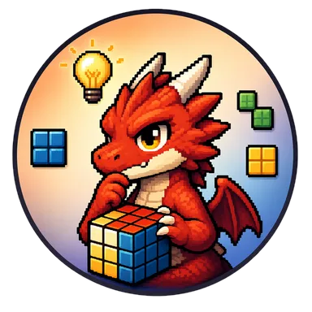

Press kit
Untuk pers, streamer, dan kreator konten. Semua yang ada di sini boleh dipakai untuk meliput game PixelRyu. Kamu boleh memonetisasi video dan siaran yang menampilkan game kami — tanpa perlu izin.
Lembar fakta
- Pengembang: PixelRyu (Ryu) — pengembang tunggal
- Berbasis di: Jepang
- Game yang dirilis: 18
- Platform: iOS (15 tersedia), Android (Google Play), Roblox (18 tersedia)
- Bahasa: 12 — Inggris, Jepang, Mandarin, Korea, Hindi, Indonesia, Jerman, Prancis, Italia, Spanyol, Portugis, Rusia
- Harga: Gratis, didukung iklan
- Kontak pers: idev10752@gmail.com
- Situs web: pixelryu.github.io
Riwayat
PixelRyu adalah satu pengembang di Jepang. Setiap game berawal dari satu benda Jepang yang akrab — bola benang, sebatang dupa, lantai tatami, stempel ukir — lalu diubah menjadi aturan yang bisa kamu rasakan dalam sepuluh detik pertama.
Studio ini merilis dalam ukuran kecil dan sering: satu game selesai, terbit di iPhone, Android, dan Roblox dalam dua belas bahasa, lalu yang berikutnya dimulai. Semua judul gratis; iklan yang membiayai pekerjaan ini, dan tidak ada yang harus dibeli untuk sampai ke tahap terakhir.
Game
- KADŌ — Zen Flower Puzzle · Roblox
- HANKO — Zen Seal Carving Logic Puzzle · Roblox
- Hoshikari — Lock the swarm. Loose the light. Hunt the stars. · App Store · Roblox
- Okaeri — Cozy Pet Homecoming Slide Puzzle Game · App Store · Roblox
- Shizuku — Set the garden; let two drops meet. · App Store · Roblox
- SENKO — Calm the smoke, shape the stillness. · App Store · Roblox
- WAGASHI: Knead & Craft — Knead the sweets by hand. · Roblox
- CounterParts — One swipe moves two. · App Store · Roblox
- TATAMI — Lay the tatami. Earn your reward. · App Store · Roblox
- TEMARI — Bat the temari. Pop the paper balloons. · App Store · Roblox
- Bounce Cat — Bank shots. Free the cat. · App Store · Roblox
- HAYATE — Ride fast. Slice clean. Finish first. · App Store · Roblox
- Sumlings — Place numbers. Hatch wonders. · App Store · Roblox
- Parcel Pals — Pack happiness. Ship smiles. · App Store · Roblox
- ISSEN — One breath, one stroke, one cut · App Store · Roblox
- HOTARU — The Lost House · App Store · Roblox
- Liquid Glow · App Store · Roblox
- モグラぽかぽか — Mole Whack · App Store · Roblox
Logo dan gambar
Ikon game dan key art bisa diambil langsung dari halaman masing-masing game yang ditautkan di atas. Tanda studio ini adalah ikon naga di bawah; mohon gunakan apa adanya, tanpa memotong atau mengubah warnanya.
